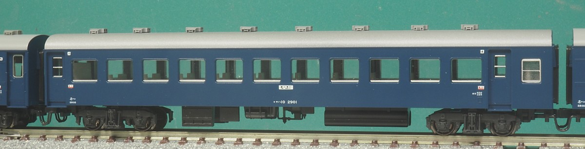
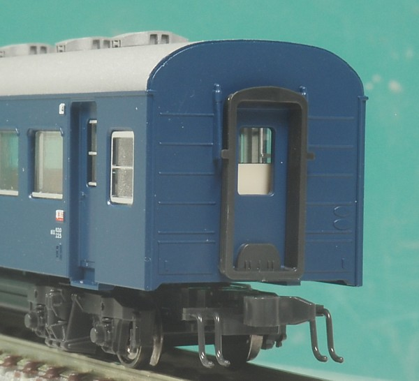
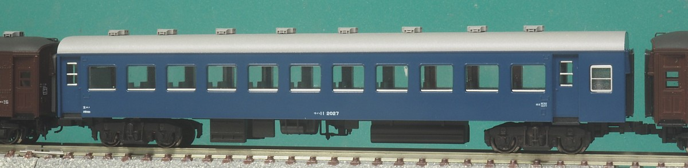
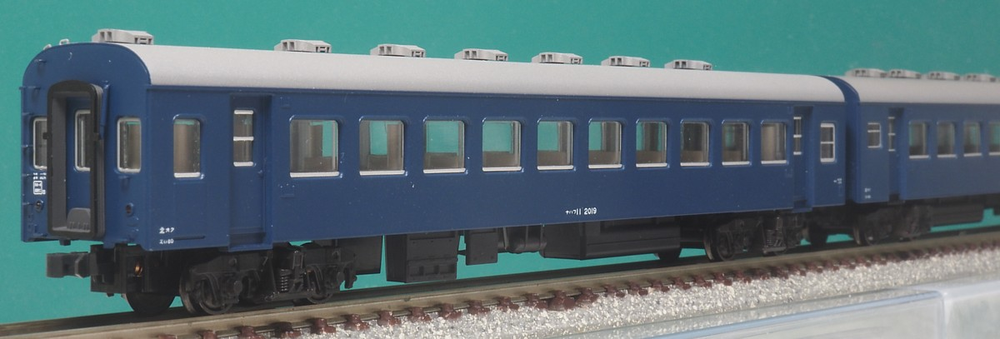
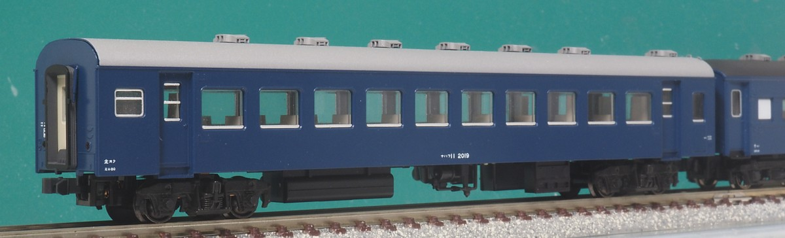
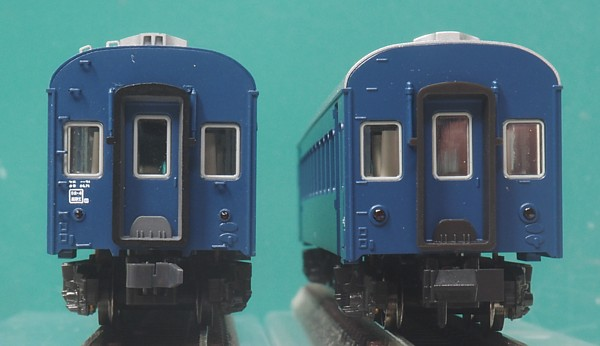
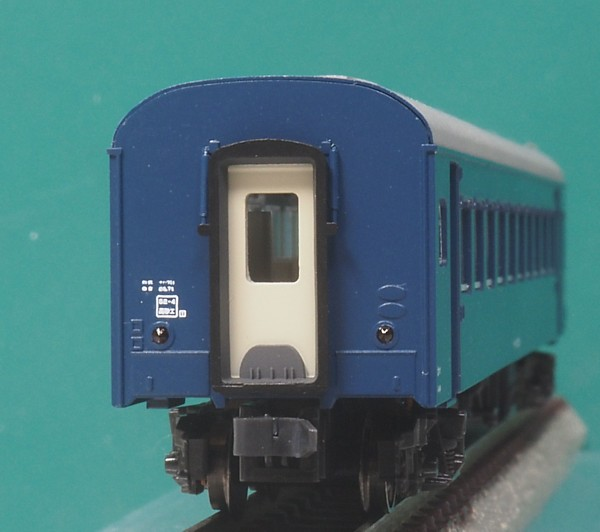
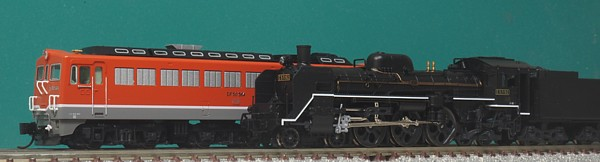
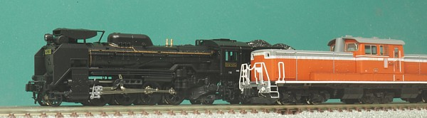
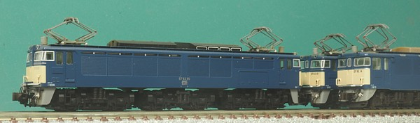

10系客車のうち、座席車のグループです。 設計はスイスの客車を参考にしたそうで大きく取った側面窓や深い屋根、 枕ばねにもコイルバネを使用した軽快な印象のTR50系列の台車などそれまでの客車とは一線を画した外観です。
客車のみならず、80系電車やキハ55系など当時の電車・気動車の設計にも
大きな影響を与えました。
ナハ10の自重は23.8t、ナハフ10の自重は24.7tでともに換算両数は積3.0/空2.5。
スハ43が積4.0/空3.5でしたからスハ43を3輌つなぐ換算両数でナハ10を4輌つなげるわけで、まさに大幅な軽量化を達成しました。
幹線の電化が進んでくるとけん引定数の制約は考慮する必要が減ってしまいました。 内装に合成樹脂素材を多用していることによ防災面の懸念、 過度の軽量化からくる車体の傷みなどによりスハ43/オハ35よりも優先して廃車され、 末期まで生き残った車両はわずかでした。

試作車として作られたナハ10 1-8を、試作車らしい番号 901-908に改番して生まれたグループです。 台車は枕ばねがコイルばね一個のTR50Xでした。 77年の配置表では、既に廃車が進んでいるようですが、盛岡・水戸・名古屋に配置されていたようです。
自重は23.0tです。 製造コスト低減により23.8tになった量産車よりもさらに軽くなっています。
KATOから名古屋の車両として「きそ」の編成に組み込んで発売されました。 リブ付きの妻面、TR50X台車は新規金型として、一見流用に見える側面も扉上部のRを表現するために 新規金型が起こされていて車体は完全新規。流用は屋根と台車だけという気合の入れようで…。 個人的にはこんなマニアックな車両作るくらいならオハネフ13を作ってEF62の後期型と一緒に 「越前」の模型化してくれれば…と思わんでもないのですがこっちはこっちでありがたいのかも。 てか買ってますし。

リブ付きの妻面です。 オハネフ12(←ナハネフ10←ナハネ10)の初期車にも同様のリブがついていました。 扉の上部が丸くなってるのもわかりますね。

ナハ10に対して製造時から蛍光灯を装備した形式です。 ナハ10の製造量数は122両(試作車含む)、ナハ11の製造量数は102両でした。
共通の加工として、ベンチレーターをスハ43のものに別パーツ化しています。 みじん切りにした車体の材料で穴を埋めた後にはめ込みをする工法はオハ35と同様。 10系も普通車だけで6両ありましたので、それなりのボリュームでした。 屋根は銀灰色で塗装した後、吹き付けで軽くウェザリングしています。

ナハ10の緩急車。 ナハフ10の製造量数は48両、蛍光灯化したナハフ11の製造量数は30両です。 やや緩急車の比率が低いあたりは急行型っぽいところでしょうか。自重は24.7tでした。
1993年にKATOから10寝台車に引き続くシリーズとしてオユ10、ナハ11、ナハフ11が発売されました。 その後も「だいせん」「日南」など各種急行列車のセットに組み込まれています。 「津軽」くらいしか出番がなかったオハ35と比べると対照的な出番の回り方ですね。
車掌室はデッキの外側に設置されます。 車掌室の窓は下降窓なため客室窓とは異なります。下辺にサッシがついてるのはエラーでは??とも思ったのですが 最下辺にわずかに銀色が見える写真もあり謎です。 これを表現してるにしてはオーバーだとは結局思うのですが、削るか悩み中。

晩年の写真では、車掌室を内側に向けた連結をよく見かけます。 ナハフ11に限らずスハフ42、オハフ45などでも見られますが、 おそらくローカル線の無人駅での集札の便を図ったのではないかと。
その後自動ドアの50系になると緩急車には両端に車掌室が設置され、 乗務員扉までつきましたね。

未加工の車両との比較。
「とにかくでかい、後部反射標識付き風テールライト」を何とかしたく、一度穴埋めしてからφ1.0プラパイプで作り直しています。 工作の過程で削り取ったステップはTAVASAのエッチングパーツで作り直し。 テールライトが製造銘板と重ならないようやや上・内側に移動して配置されており、 それに引きずられてステップの下2段の位置も実物よりもやや上よりに移動しています。 別パーツ化するときにもとのステップの位置に穴あけしてしまうと位置がずれので注意が必要です。(やってしまい、一度埋めました…)
最下段の踏板は、今回はトレジャータウンの「14系・24系妻面手すりセット」(TTP215-07)に含まれる 物を使用しました。 ステップ・踏板ともに別途塗装後に取付穴に圧入する方法で組み立てています。 細かいことをいうと取付孔のφ0.3が見えていますが(写真で超拡大するとわかる)、 妻面の平滑化と塗装のやりやすさから塗装前に取り付けるより楽で、次からこの工法でやろうと思ってます。
それにしてもこの角度で見るとNゲージの軌間の広さと、台車の幅の広さが幻滅です…。 6.5mmに改軌すればいいわけですが、これだけ車両集めてるとまぁ…。 1/150, 9mmに住んでる以上諦めないといけないのかも。 端梁つけて少しでも隠します。

トイレ側妻面。
こちらのテールライトはもとのモールドにφ1.0の孔を開けて光学繊維のレンズを入れただけなのででかいままです。 こちらもφ1.0xφ0.8とかであとひと手間かけると違ったのかもしれませんが、もし次に機会があれば…。
幌吊りもφ0.3燐青銅線とφ0.5x0.3パイプで別パーツ化。 もともと、のっぺりした妻面なのでとても効果的です。 レボリューションファクトリーのインレタを組み合わせて検査表記を付けました。 組み合わせて取り付けるのにずいぶん苦労したのですが、地味にGMから使えるインレタが新発売されてたのね…。
10系客車は、その軽量さから末端が非電化で非力なDF50や蒸気機関車けん引となる九州夜行、 勾配線区を走る中央本線の急行など各地の急行列車に重宝されました。 10系座席車を14輌連ねた「桜島」「高千穂」、碓氷峠通過の重量制限(360t)をクリアするため 座席車をほぼナハ10として11輌編成で構成した「白山」などはまさに、でしたね。
電化・電気機関車全盛の今となっては実感がありませんが、客車の重量を軽くすることはとにかく切実な課題でした。 末端区間に行くと出てくる非力な機関車たちです。

日豊本線の電化は大分、宮崎と進んでいきましたが遅くまで非電化で、DF50とかC57とかが出てきました。 「桜島」「高千穂」「日南」などの末端区間ですね。 DF50は「貨物列車けん引時(低速域)ではD51相当、旅客列車けん引時(高速域)ではC57相当の性能」として開発された機関車で、 エンジンの出力はMAN型で1200馬力、ズルツァー型で1060馬力(いずれも連続定格)と非力、 それを30%まで引っ張った弱め界磁制御で速度を稼いでいました。

こちらは非力ではないのですが、勾配線区の機関車です。 中央西線の電化は昭和48年で、それまではD51やDD51が活躍していました。 DD51は1100馬力のエンジン2基を積んでいてDF50よりはるかにパワーがありますが、 それでも急こう配が続く中央西線はけん引定数の制約が厳しく 「きそ」「ちくま」は軽量の客車で構成されていました。

更に強力な機関車ですが、環境が過酷なパターン。 碓氷峠では急こう配をクリアするため専用の機関車EF62, EF63が運用されていましたが、 通過する列車は旅客列車は360t、貨物列車は400tに制限されていました。 東京と長野・北陸を結ぶルートなので旅客需要も多い区間です。 EF63と協調運転できる489系・189系・169系の運用がはじまると電車でも12両での通貨が可能となりましたが それまでは無動力でしたので電車・気動車は8両に編成が制限されており客車と比べると輸送力に劣ります。 このため「白山」は1972年の特急格上げ直前までナハ10系メインの11両編成の昼行客車急行でした。 特急格上げの際に、489系がデビューしています。
自重についてですが、ナハ10の自重のほうは900番台が23.0t,量産車が23.8tという記述があちこちにあるのですが ナハフ10の自重のほうはよくわからず…。写真を検索してみると24.5t, 24.7t, 24.9t等が出てきます。 自重は測定値から各車決めるものなのでばらつきがあるのはそんなものなのですが、 緩急車というだけでナハ10よりも1tも重かったのかは謎です…。 電気暖房の装備は一式で1t弱といわれていますが、調べてて出てきたナハフ10は電気暖房非装備でも24.7t、 装備でも24.9tというものがありこれまた謎。なんか測定系の誤差のほうが大きかったんでは、と思うのですがどうなのでしょう。
換算両数の話をだらだらと続けます。
客車の重量区分(コホナオスマカ)は積車重量から決まっており、例えば"ス"の積車重量は37.5t〜42.5tとなります。
鉄道ピクトリアルのスハ43系特集(2002/6)には"オ"の空車重量の基準が32.09t以下となっており、なんか中途半端な数値。これを考えてみます。
スハ43の場合定員は88名。換算重量計算時の蓄電池の重量が1t、定員分の乗客の重量が0.05 x 88 = 4.4tですから
ここから 37.5 - (1 + 4.4) = 32.1t となりこれが "ス" と "オ" の分岐点となるかなと。
客車の場合、換算両数は積車=空車+0.5として運用されてたので積車重量は空車重量+5t
という単純な話でもなく、あくまで積車重量を基準に重量ベースで空車の自重の範囲が決まってたようですね。
更に引っ張って碓氷峠の話。 碓氷峠の通過制限は貨物400t、旅客360tと、旅客のほうが1割少なくなってます。 この数値の違いが何故出るのかずっと疑問だったのですが上記の客車の積車の換算両数の決め方にあるのかなと推測しました。 貨物は荷重以上の荷物は積まれないため(ガソリンを150%積んでるとかできません…)、 積車重量よりおおきな換算になることはありません。 一方、旅客のほうは乗車人数を管理しているわけでありませんから乗車率150%とかになります。 また、人の体重も一律50kgとして計算されていますから定員で管理していたとしても個人の体重分の誤差があります。 実際の設計上の制限値は400tで、旅客の場合には換算で上限を計算するために この1人分の重量誤差と、乗車率をマージンとして取っていたのではないかなと。